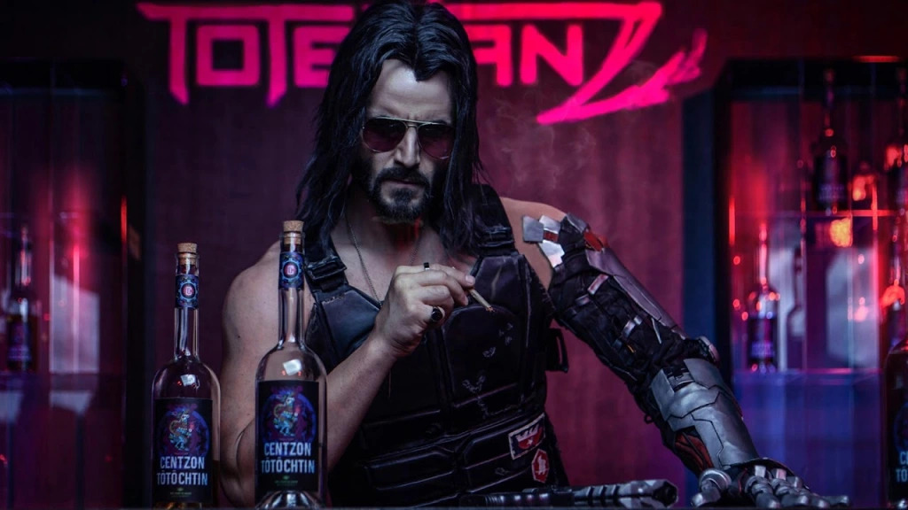
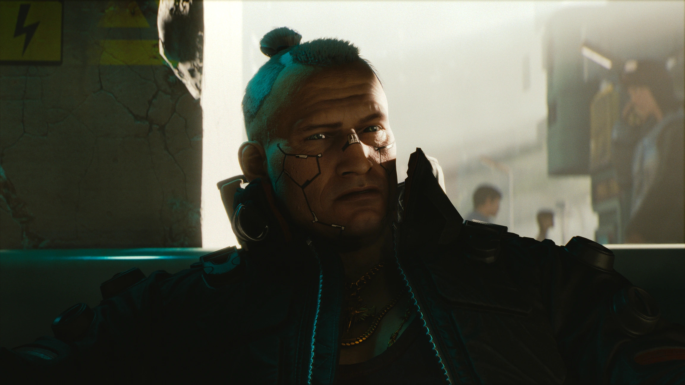
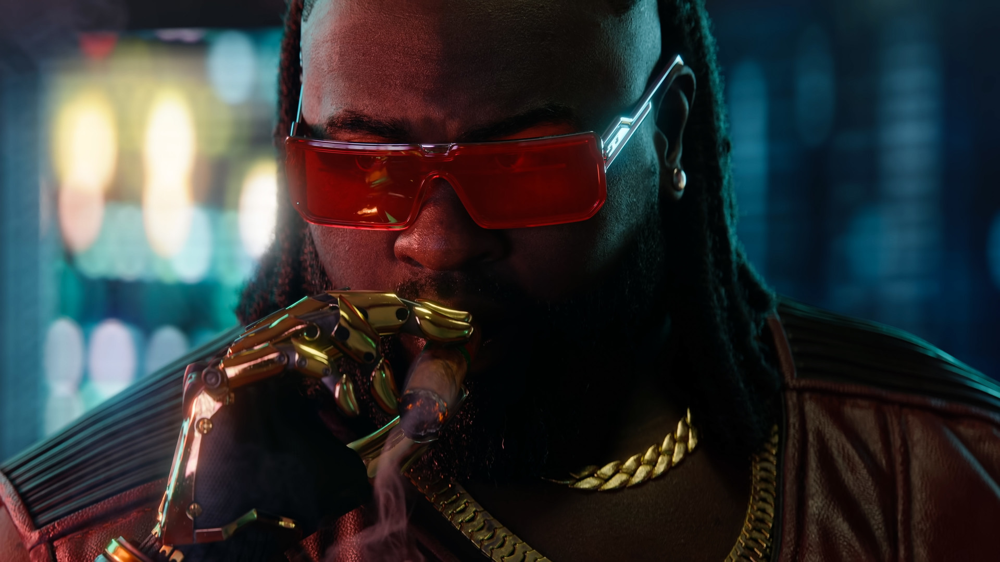
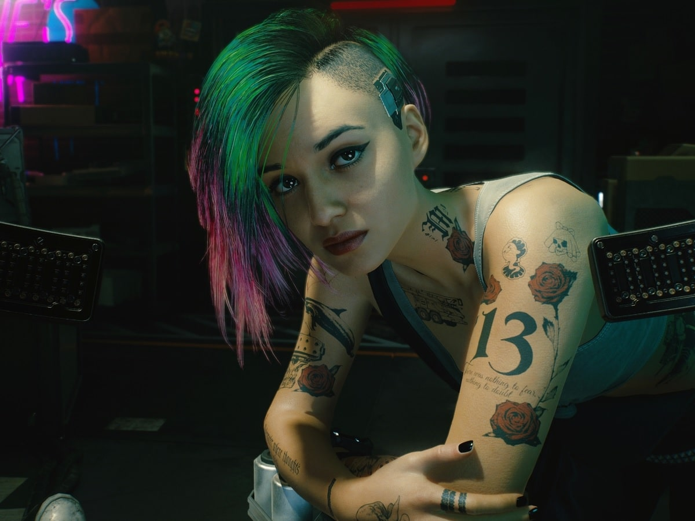
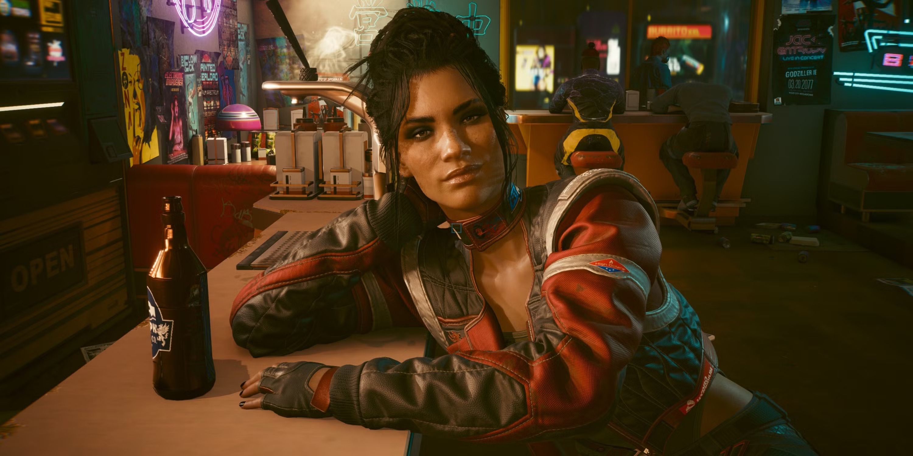
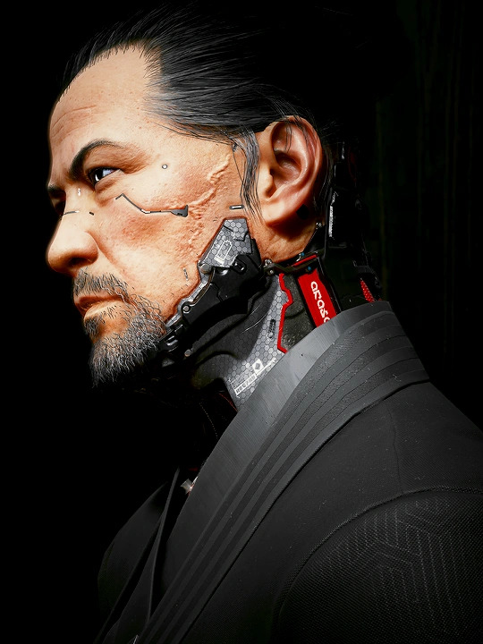

V

V é o protagonista jogável de Cyberpunk 2077, um mercenário em ascensão em Night City. Sua aparência, habilidades e passado (Nomad, Streetkid ou Corpo) são totalmente personalizáveis, afetando interações e caminhos narrativos.
JOHNNY SILVERHAND
Johnny Silverhand é uma figura lendária no universo de Cyberpunk 2077. Ex-vocalista da banda de rock Samurai e veterano de guerra, ele é um rebelde anti-corporações que se tornou símbolo de resistência contra a opressão das megacorporações, especialmente a Arasaka, que ele odeia profundamente.
JACK WELLES
Jackie Welles é um dos personagens mais carismáticos e queridos de Cyberpunk 2077. Nascido e criado em Heywood, bairro popular de Night City, Jackie é um ex-gângster que busca uma vida melhor como mercenário. Leal, destemido e com um forte senso de honra, ele rapidamente se torna o melhor amigo e parceiro de V.
DEXTER DESHAWN
Dexter DeShawn, conhecido como Dex, é um dos fixers mais notáveis de Night City no jogo Cyberpunk 2077. Ele é um homem corpulento, com um braço cibernético dourado e uma personalidade imponente. Apesar de não ser um mercenário, Dex se destaca por sua habilidade em identificar talentos e manipular situações a seu favor.
JUDY ALVAREZ
Judy Álvarez é uma das personagens mais complexas e admiradas de Cyberpunk 2077. Como técnica de braindance (BD), ela possui habilidades excepcionais em edição e manipulação de memórias digitais, além de ser uma das poucas a desenvolver chips de defesa para as "dolls" de Night City. Sua história é marcada por tragédias pessoais e uma luta constante contra a opressão sistêmica.
PANAM PALMER
Panam Palmer é uma das personagens mais cativantes e complexas de Cyberpunk 2077. Ex-integrante do clã nômade Aldecaldos, ela se destaca por sua independência, lealdade e habilidades excepcionais em combate. Vamos explorar mais profundamente sua história, personalidade e impacto no jogo.
TAKEMURA
Takemura é um personagem importante em Cyberpunk 2077, conhecido por ser um ex-guarda pessoal e oficial da Arasaka, uma das megacorporações mais poderosas do universo do jogo. Ele é um homem leal, disciplinado e habilidoso, com um forte senso de honra e dever.